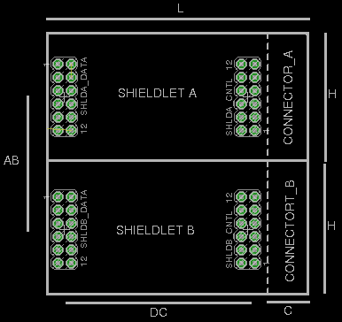

Version 0.1 draft
1.1 Shieldlet Shieldlets are small I/O daughter boards (modules) for Amino development and deployment boards. A layout example is described below:

1.2 Dimensions
| Dim | Value |
|---|---|
| L | <=50mm |
| H | <=25mm |
| C | ~10mm |
| AB | 25mm |
| DC | 35mm |
1.3 Description The layout shown illustrates the full standard shieldlet expansion area, consisting of either two 8bit 50 x 25 shields or a single 16bit 50 x 50mm shield.
1.4 Connections Each shieldlet is made up of 2 x 12 pin connectors each dual row (2x6) pin with a standard 0.1 inch pitch, the first (left) is the parallel data port connector and the second (right) is the control/serial connector.
Shieldlet A Data Port Connector
| Pin | Name | Default(8bit) | Nibble(4bit) | Word(16bit) |
|---|---|---|---|---|
| 1 | DA0 | Digital IO bit 0 | ||
| 2 | DA1 | Digital IO bit 1 | ||
| 3 | PA0 | Byte Port A bit 0 | Nibble Port A bit 0 | Word Port A bit 0 |
| 4 | PA1 | Byte Port A bit 1 | Nibble Port A bit 1 | Word Port A bit 1 |
| 5 | PA2 | Byte Port A bit 2 | Nibble Port A bit 2 | Word Port A bit 2 |
| 6 | PA3 | Byte Port A bit 3 | Nibble Port A bit 3 | Word Port A bit 3 |
| 7 | PA4 | Byte Port A bit 4 | Nibble Port A bit 4 | Word Port A bit 4 |
| 8 | PA5 | Byte Port A bit 5 | Nibble Port A bit 5 | Word Port A bit 5 |
| 9 | PA6 | Byte Port A bit 6 | Nibble Port A bit 6 | Word Port A bit 6 |
| 10 | PA7 | Byte Port A bit 7 | Nibble Port A bit 7 | Word Port A bit 7 |
| 1 | DA2 | Digital IO bit 2 | ||
| 1 | DA3 | Digital IO bit 3 | ||
Shieldlet A Control Connector
| Pin | Name | Function | Alternate |
|---|---|---|---|
| 1 | GND | Digital IO Ground | |
| 2 | 5V | 5 Volt Supply | |
| 3 | MOSI | SPI - Serial IN | |
| 4 | SCLK | SPI - Serial Clock | |
| 5 | SA0 | Virtual Shield Address 0 | |
| 6 | SA1 | Virtual Shield Address 1 | |
| 7 | GND | Digital IO Ground | |
| 8 | 3.3V | 3.3 Volt Supply | |
| 9 | SDA/Tx | I2C - Port A Data | Tx |
| 10 | SCL/RX | I2C - Port B Clock | Rx |
| 11 | SS | SPI - Serial Select | |
| 12 | MISO | SPI - Serial Out | |
Shieldlet B Data Port Connector
| Pin | Name | Default(8bit) | Nibble(4bit) | Word(16bit) |
|---|---|---|---|---|
| 1 | DA4 | Digital IO bit 4 | ||
| 2 | DA5 | Digital IO bit 5 | ||
| 3 | PB0 | Byte Port B bit 0 | Nibble Port C bit 0 | Word Port A bit 8 |
| 4 | PB2 | Byte Port B bit 1 | Nibble Port C bit 1 | Word Port A bit 9 |
| 5 | PB2 | Byte Port B bit 2 | Nibble Port D bit 2 | Word Port A bit 10 |
| 6 | PB3 | Byte Port B bit 3 | Nibble Port D bit 3 | Word Port A bit 3 |
| 7 | PB4 | Byte Port B bit 4 | Nibble Port D bit 4 | Word Port A bit 4 |
| 8 | PB5 | Byte Port B bit 5 | Nibble Port D bit 5 | Word Port A bit 5 |
| 9 | PB6 | Byte Port B bit 6 | Nibble Port C bit 6 | Word Port A bit 6 |
| 10 | PB7 | Byte Port B bit 7 | Nibble Port C bit 7 | Word Port A bit 7 |
| 1 | DA6 | Digital IO bit 2 | ||
| 1 | DA7 | Digital IO bit 2 | ||
Shieldlet B Control Connector
| Pin | Name | Function | Alternate |
|---|---|---|---|
| 1 | GND | Digital IO Ground | |
| 2 | 5V | 5 Volt Supply | |
| 3 | MOSI | SPI - Serial IN | |
| 4 | SCLK | SPI - Serial Clock | |
| 5 | SA0 | Virtual Shield Address 0 | |
| 6 | SA1 | Virtual Shield Address 1 | |
| 7 | GND | Digital IO Ground | |
| 8 | 3.3V | 3.3 Volt Supply | |
| 9 | SDA/Tx | I2C - Port B Data | Tx |
| 10 | SCL/Rx | I2C - Port B Clock | Rx |
| 11 | SS | SPI - Serial Select | |
| 12 | MISO | SPI - Serial Out | |
Note - The sharing of SDA/TX and SCL/RX is still up form debate, Rx/Tx doesn’t fit squarely with virtual shields as they are point to point, we may have to have them on pins however for compatability reasons. Thus the primary pin function of I2C should be assumed
1.5 Shields vs Shieldlets When the two shieldlets are combined into a single PCB/Card they become a shield and the shield is optionally capable of operating in 16bit Word mode. This is usefull for dealing with higher bandwidth or wider devices like for example a 16 bit ADC. Alternatively one could use a similar 16 bit ADC in 8 bit mode on a Shieldlet by interleaving the Bytes by using the shieldlet address bits, this would of course operate more slowly (half the speed). One could even use a 24 bit ADC in this manner if it supported byte transfer.
Shields and Shieldlets also support stacking on top of each other. In this mode a shieldlet shares its Data port connectors and must pay attention to the shieldlet address pins to make sure data port contention does not occur. It would be possible thus to have up to eight shieldlets stacked (4 on each shield port) operating in byte or dual nibble modes.
Thus there are 8 total 8bit wide (byte) virtual shield spaces (8 shieldlets) Thus there are 4 total 16bit wide (word) virtual shield spaces (4 shields)
One must also pay attention to the bandwidth, if many shields are to be stacked the bandwidth may become proportionally more limited as the data must be interleaved over common data ports.
1.6 Electrical
All I/O and data levels operate at 3.3V logic. If multiple shields are to be supported all data port signals need to be buffered as the shieldlet drivers have a limited current operation. In addition when using multiple shieldlets that input data to the Amino device it must also use high impedance output buffering so as not to interfere with other shieldlets on the same port.
2.1 Identification Each shieldlet should be capable of identifying its usage of virtual shield channel. A shield can also identify itself via a unique id. These two identification operations enable the Amino motherboard to adopt specific modes of operation. In some cases it may be used to load specific modules or drivers to handle the shieldlet.
On startup each Virtual Shieldlet Channel (VSC) is successive addressed (using SAX pins), with each access a class descriptor (8bit int) should be returned for that channels usage. If x0 or no response is returned it is assumed that the VSC is unused.
A special class of xF is reserved for dumb shieldlets, these just react to the state of the data port pins. An example would be 12 leds driven by the data port lines (prefreably buffered!!). For a board to indicate that it is of the ‘dumb class’ simply connect SA0 and SA1 to MOSI via a resistor and diode in series creating DDL AND.This means a dumb board will take up 3 of the 4 SVCs on that shieldlet channel using this method. It could therefore be considered both dumb and an unfriendly neighbour.Adding a couple of gates, or transistors could improve omn this significantly, using a shift register of SPI ee
prom/peripheral could do even better, try to be a good neighbour, otherwise folks won’t want to live next door.
2.1.1 Dumb Shieldlet Address decode using diode logic
SA0 –/\/\/–>|– MOSI
SA1 –/\/\/–>|– MOSI
2.1.2 Intelligent and goog neighbourly shieldlet operation
here are two examples:
Using a $0.20 SPI eeprom
| EEPROM | |
|---|---|
| 3.3V | MOSI |
| CS | GND |
| CLK | MISO |
Basic : no added gates
CS = SA0
Indicates occupancy of 2 VSC SA0/SA1=10/11
Better : single AND gate
CS= SA0+SA1
Indicates occupancy of single VSC SA0/SA1=10 The AND could be made using a gate or transistors
the classes can be read from the eeprom, allong with optional extra information such as driver ids, vendor info etc.. TDB
2.1.3 Tests
A set of tests can probably determine compliance to given classes of VSC, this will help provide assurance about shieldlets and their conformance particularly with a view to interoperation and good neighbourlyness!